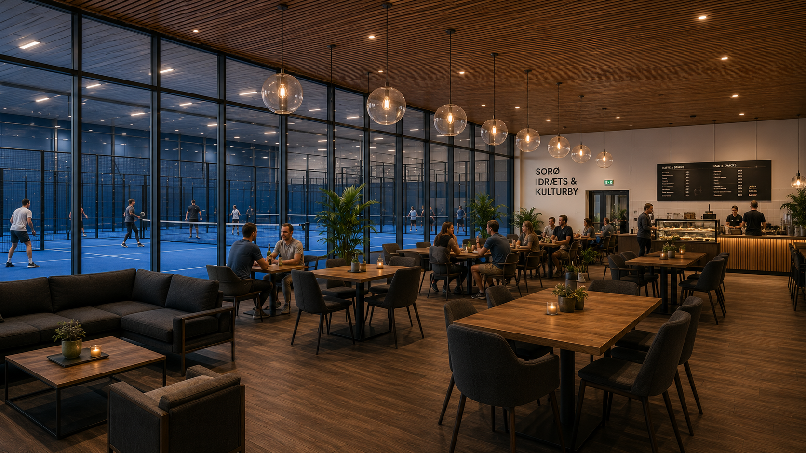
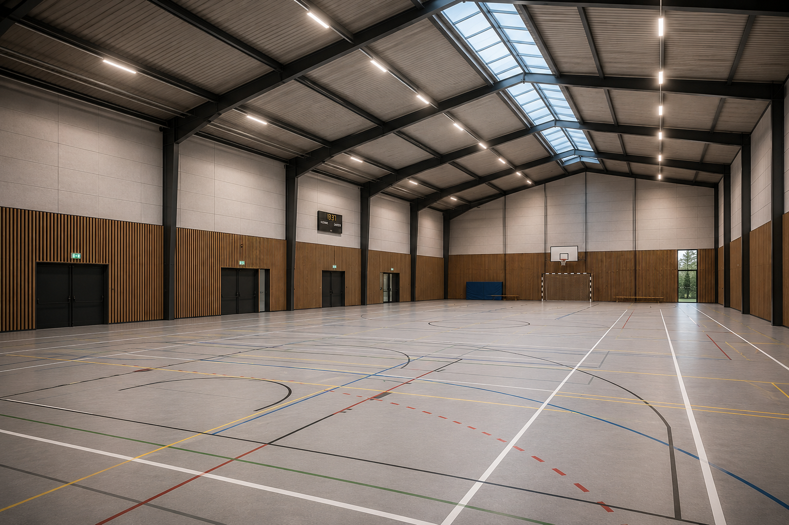
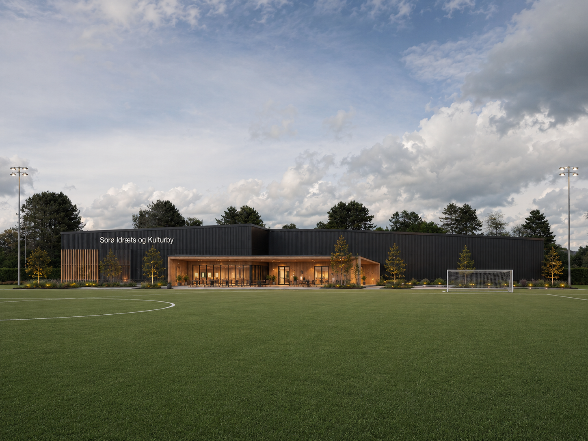

Tegnet, prissat og klar til at blive bygget i Dyhr Park, uden at røre de eksisterende fodboldbaner.

Anlægget er ca. 107 meter langt og 25 meter bredt med et tilbygget klub- og kulturhus. Bygningen bliver ca. 10,4 meter høj til kip og opføres med solceller på taget.

1.551 m² med 4 padelbaner med plads til en femte (heraf én centercourt), loungeområde på 240 m² og plads til foreningsfitness. Foreningsdrevet padel, tilgængelig for alle medlemmer.

980 m² fleksibel hal, der kan rumme aktiviteter op til en håndboldbane i størrelse: multisport, dans, klatring, e-bikes, gymnastik og events.

400 m² med café/klubhus på 189 m², mødelokale, omklædningsrum og depoter. Byens fælles stue og hjem for foreninger og kulturliv.
Faseinddelingen gør projektet fleksibelt: Det kan bygges samlet eller i etaper, alt efter finansiering.
Anlægget placeres langs den østlige kant af Dyhr Park ved Smedeparken. Placeringen er valgt med omhu:

40 kW solcelleanlæg er med i projektet fra dag ét og dækker en væsentlig del af driftens elforbrug.
Hallerne opvarmes kun til det nødvendige, og der arbejdes med varmepumper eller fjernvarme afhængigt af den bedste løsning.
Regnvand håndteres lokalt (LAR), og parkering og kloakering planlægges sammen med Sorø Kommune.
Faciliteter er kun rammen. Se aktiviteterne for seniorer, børn, unge og foreninger.
Se aktiviteterne